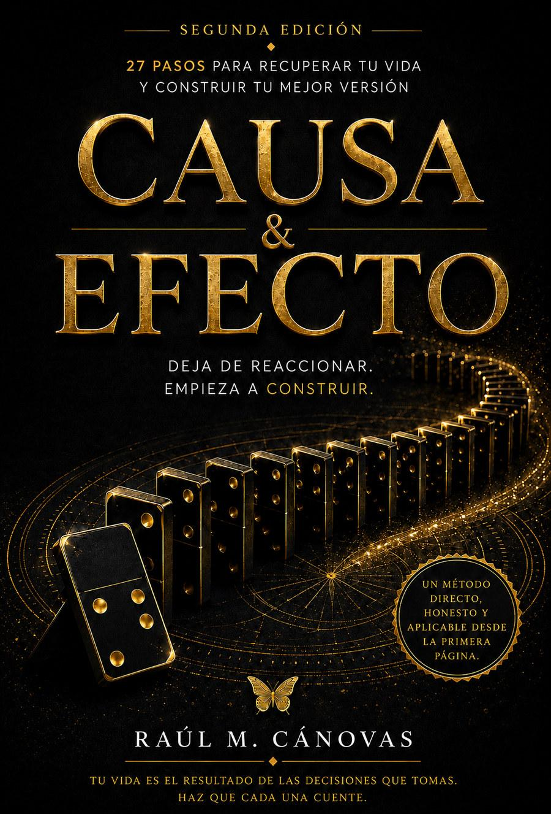
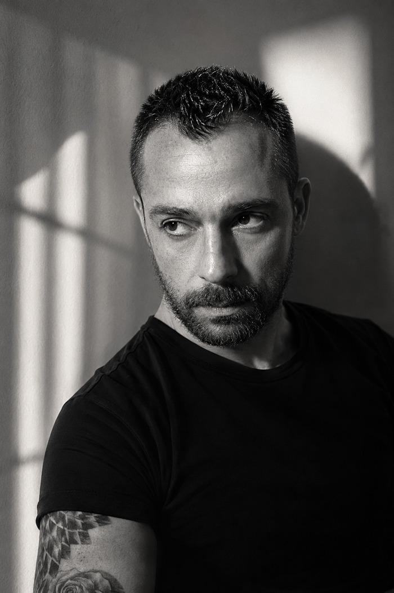

No escribí este libro desde la teoría. Lo escribí desde la noche en que entendí que estaba viviendo la vida que me tocó, no la que yo había elegido.
Cada paso está pensado para leerse, sentirse y aplicarse — no para acumular polvo en una estantería. Esto es lo que vas a encontrar:

Aprende a soltar lo que no puedes controlar sin sentir que estás renunciando.
No más "no tengo tiempo". Decisiones conscientes sobre dónde va tu energía.
Por qué repites los mismos patrones aunque sabes que no te funcionan.
Sin filtros, sin teoría vacía. Solo lo que de verdad mueve el cambio.

Que el tiempo no es infinito, y que la mayoría de nosotros vivimos como si lo fuera. Mientras el mundo se detenía, empecé a hacerme las preguntas que durante años había evitado.
De ahí nació CAUSA & EFECTO: no como una teoría más, sino como el manual que yo necesité y que nadie me dio. No vengo de la teoría académica — vengo de formar a personas en entornos donde la disciplina y la precisión lo son todo.
"Si alguna vez has sentido que el tiempo se te escapa entre las manos mientras pospones lo que de verdad importa, este libro habla directamente de ti."
La mayoría de libros terminan en la última página. Las palabras se quedan ahí, bonitas, y la vida sigue igual. Tu Causa Oculta es el diagnóstico personal que te dice, sin rodeos, qué punto del libro necesitas leer primero — y qué estás evitando ver.
Respondes unas preguntas directas. Sin genéricos.
Analizamos tus respuestas con el método de los 27 pasos.
Recibes tu diagnóstico personal por email. Gratis.
Gratuito · 2 minutos · Sin spam
No necesitas más tiempo. Necesitas dejar de mentirte sobre dónde se va.
Cada vez que dices "no puedo", en realidad estás diciendo "no quiero pagar el precio".
El día que entiendas la causa, dejarás de sorprenderte del efecto.
¿Ya lo has leído? Tu reseña en Amazon ayuda a que llegue a quien más lo necesita.
Dejar mi reseña en AmazonIdeas, procesos y aprendizajes que no cabían en 27 pasos. Lo que voy pensando mientras el libro sigue su camino.
Los primeros artículos llegan pronto. Si quieres enterarte antes que nadie, sígueme en Instagram.
Presentaciones, colaboraciones, nuevas ediciones y todo lo que vaya moviéndose alrededor del proyecto.
Todo se anunciará aquí primero. Este espacio se irá llenando conforme avance el proyecto.